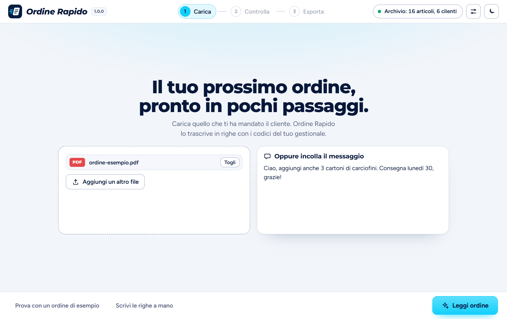
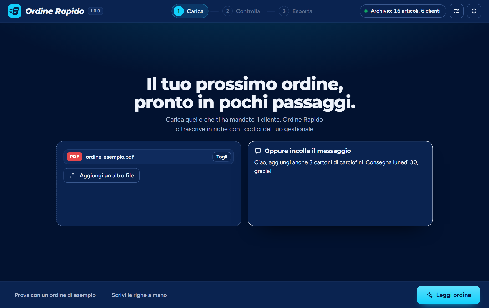
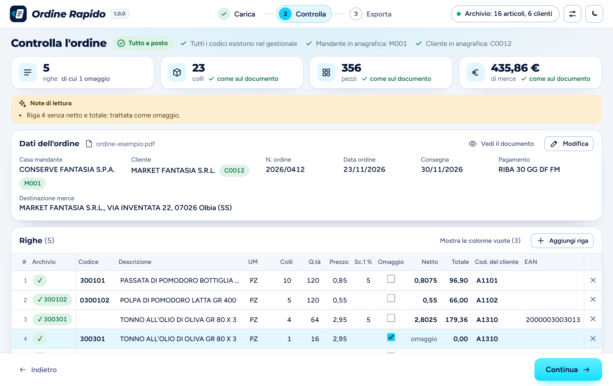
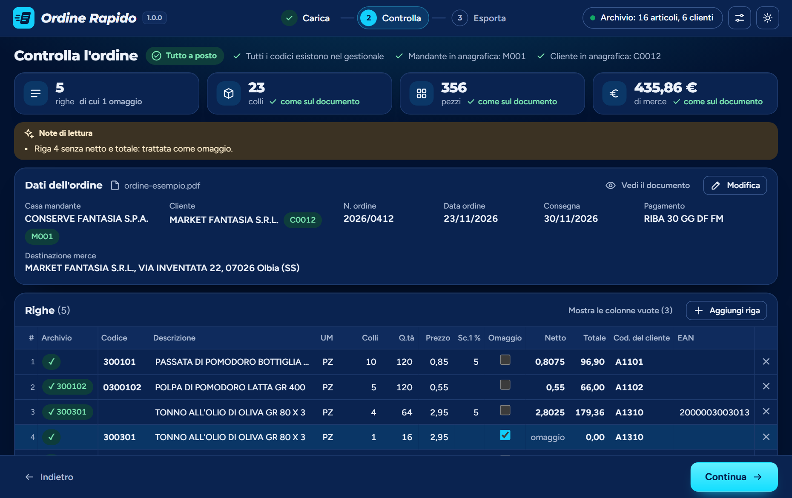
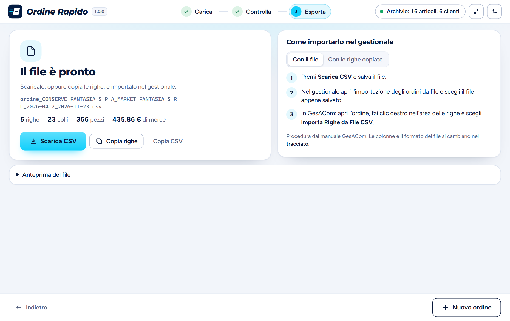
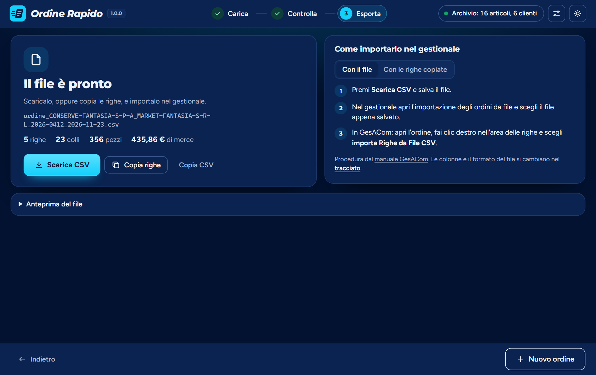
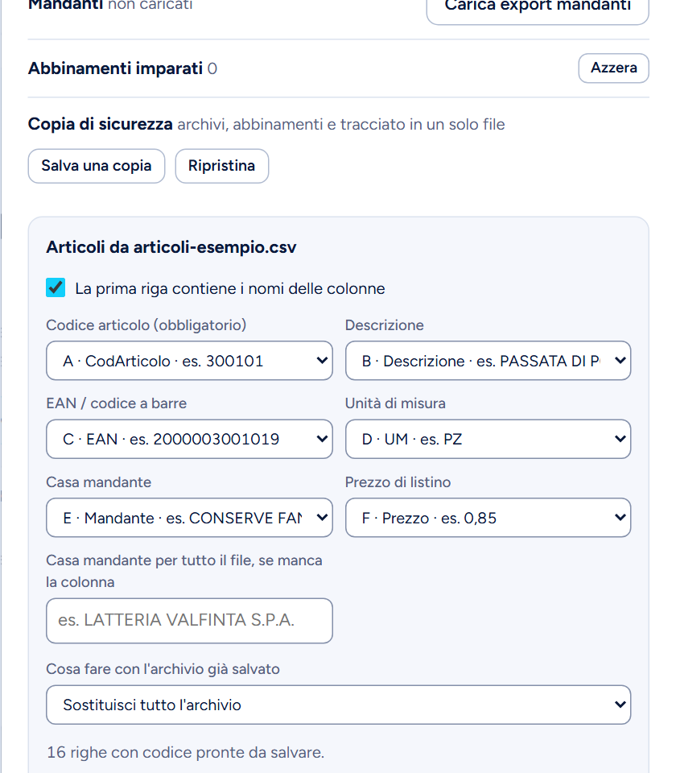
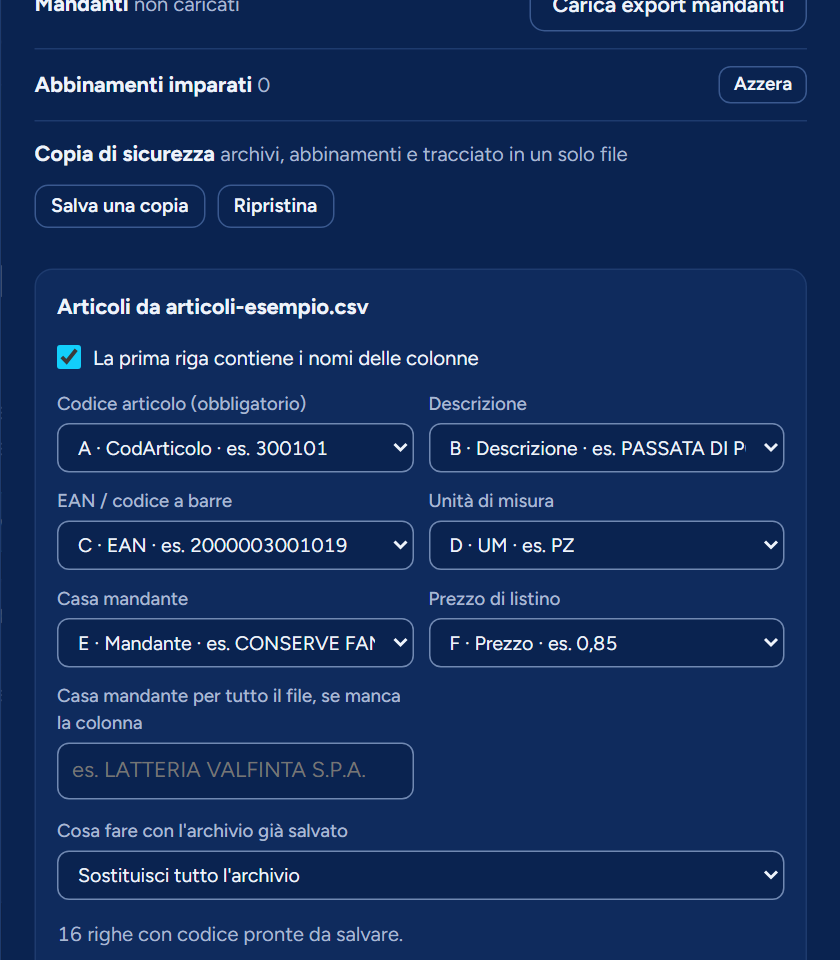
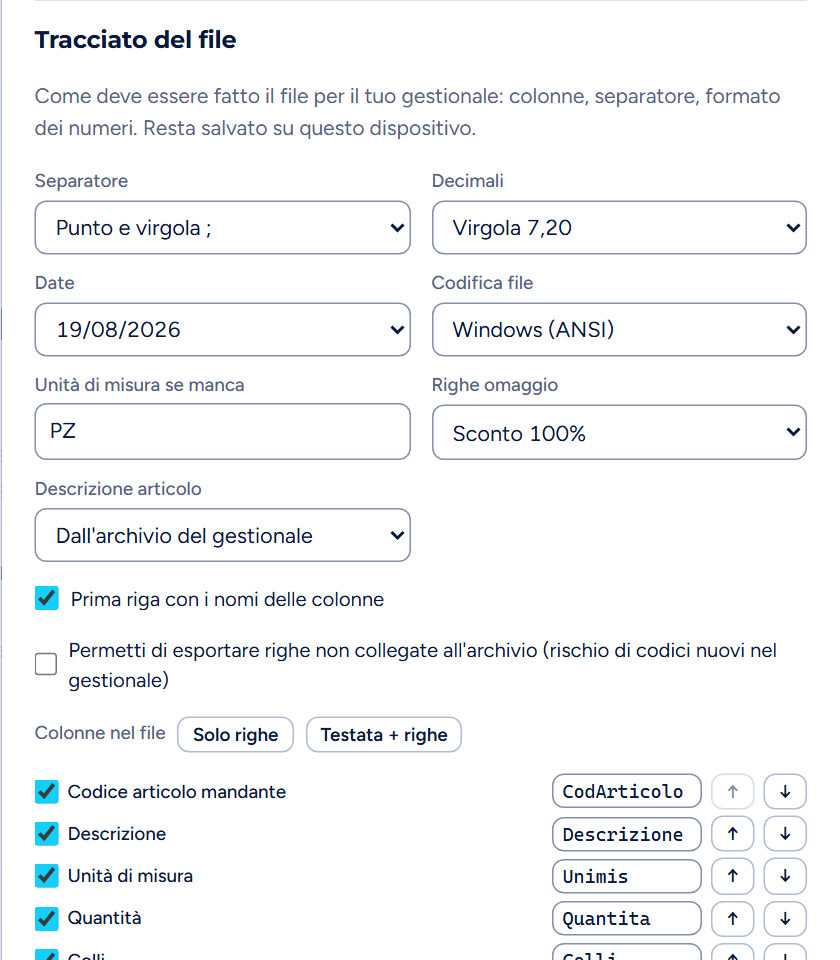
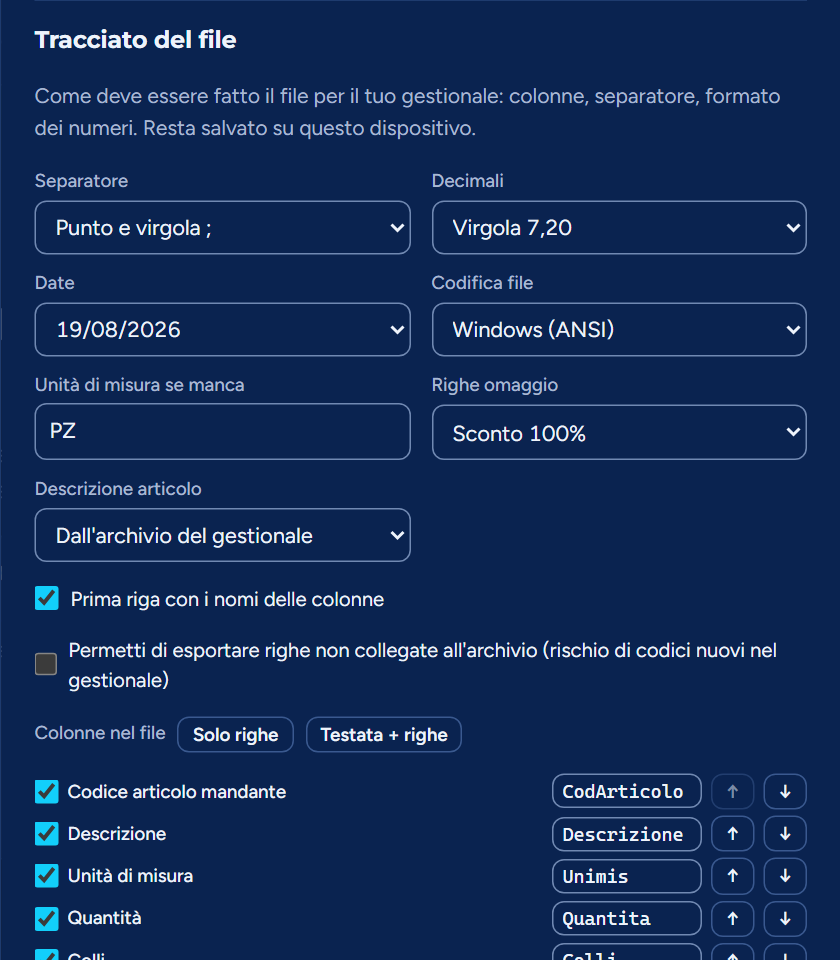

Come funziona
Tre passaggi, sempre gli stessi.
Dal documento del cliente al file per il gestionale. La lettura richiede di solito meno di un minuto; il resto è il tuo controllo.






- PDF, anche di più pagine
- Excel e CSV
- Foto di biglietti scritti a mano
- Messaggi ed email inoltrate
La regola che conta
Nel file finiscono solo codici che esistono già.
L'intelligenza artificiale trascrive, non decide. Un codice entra nel file soltanto se è nell'archivio che hai caricato tu. Se una riga non trova il suo articolo, l'esportazione si ferma e te lo dice: nel gestionale non nasce nessun record nuovo per errore.
- In archivio
Trovato per codice, per codice a barre o perché l'avevi già abbinato tu. Entra nel file con il codice dell'archivio.
- Da confermare
L'app propone l'articolo più simile. Finché non lo confermi, non vale.
- Non in archivio
La riga blocca l'esportazione. La colleghi a mano con la ricerca, oppure la togli.
Per ogni lavoro
Si adatta al tuo lavoro. Basta darle i dati giusti.
Ordine Rapido non ha un catalogo suo: usa il tuo. È nata per gli agenti di commercio, ma il meccanismo è lo stesso per chiunque riceva ordini e li debba portare in un gestionale: grossisti, distributori, uffici ordini.
I tuoi articoli
Esporta l'elenco dal gestionale, in CSV o Excel, e caricalo. L'app riconosce da sola le colonne: codice, descrizione, codice a barre, unità di misura, listino.


Il tuo tracciato
Decidi quali colonne vanno nel file, in che ordine e con che nome. Separatore, decimali, formato delle date e codifica seguono il tuo gestionale. Si imposta una volta.


I tuoi clienti e fornitori
Con codice, ragione sociale e partita IVA: cliente e fornitore vengono riconosciuti da soli ed escono nel file già con il loro codice.
Impara da te
Quando colleghi a mano una riga a un articolo, l'app se lo ricorda. La volta dopo, per lo stesso cliente, lo fa da sola.
Stesso meccanismo, cataloghi diversi
«Mandami 10 cartoni di passata da 700»
✓ 300101PASSATA DI POMODORO BOTTIGLIA GR 700
300101;PASSATA DI POMODORO BOTTIGLIA GR 700;PZ;120;10Esempi di fantasia. I codici veri sono quelli del tuo archivio: l'app non ne inventa.
Servono due cose: un elenco di articoli con un codice, e un gestionale che importi un file CSV.
I tuoi dati
Restano sul tuo computer.
Nessun server
L'app gira sul tuo dispositivo. Non c'è un account e non ci sono statistiche d'uso.
Un solo collegamento
Verso Anthropic, e solo quando chiedi di leggere un ordine. Parte il documento dell'ordine; dell'archivio partono soltanto, per le righe non trovate, al massimo dieci articoli candidati ciascuna.
Chiave custodita
Nell'app desktop la chiave API è cifrata dal sistema operativo e, una volta salvata, non viene più mostrata.
Codice aperto
Licenza GPL-3.0: chiunque può leggere il codice e controllare che cosa fa l'app.
- L'app è gratuita
Nessun abbonamento e nessuna versione a pagamento.
- La lettura automatica usa la tua chiave
Serve una chiave API di Anthropic. Ogni lettura ha un costo, addebitato al tuo account.
- Senza chiave funziona lo stesso
Scrivi le righe a mano, le colleghi all'archivio, controlli ed esporti.
Come averla
Quattro forme, la stessa app.
Versione 1.0.0. Si installa sul computer oppure si apre con un doppio clic, senza installare nulla.
- Windows
Con installazione nel menu Start, oppure in versione che si avvia senza installare.
- Mac
Per i Mac con processore Apple e per quelli con processore Intel.
- Linux
Un file AppImage: lo rendi eseguibile e parte.
- File unico
Ordine-Rapido.htmlsi apre nel browser e fa le stesse cose, su qualsiasi sistema.
Per provarla senza dati tuoi ci sono un ordine di esempio e tre archivi di fantasia già pronti.
Domande
Quello che conviene sapere prima.
Funziona con il mio gestionale?
Se il tuo gestionale importa ordini o righe da un file CSV, sì. Colonne, ordine, separatore, decimali, formato delle date e codifica si impostano una volta. In alternativa copi le righe e le incolli. L'app è stata messa a punto lavorando con GesACom.
E se la lettura sbaglia?
Ogni lettura va controllata, e l'app ti aiuta: confronta colli, pezzi e importo con quelli del documento, segnala le righe dubbie e ti fa rivedere il documento originale. I codici, in ogni caso, arrivano solo dal tuo archivio.
Serve internet?
Solo per la lettura automatica. Scrivere le righe, collegarle all'archivio, controllare ed esportare funziona senza connessione.
Quanto costa?
L'app è gratuita e a codice aperto. La lettura automatica usa la tua chiave API di Anthropic: il costo di ogni lettura dipende dal modello scelto e dalla lunghezza del documento, e viene addebitato al tuo account.
Se chiudo l'app a metà di un ordine?
L'ordine in lavorazione viene salvato sul tuo dispositivo a ogni modifica. Alla riapertura lo ritrovi com'era.
Quanto può essere lungo un ordine?
L'app legge le prime 6 pagine di un PDF e fino a 12 immagini per ordine.
Windows dice che l'app è bloccata
Su alcuni PC con Windows 11 il sistema ferma i programmi senza firma digitale. In quel caso si usa il file unico, che si apre nel browser e fa le stesse cose.